广州50个适合一日游的免费景点！附带交通指南
蛙鸣智能 2019-03-07 18:25:00
超适合一日游的景点
覆盖全市11个区
景美人少，关键还免费！
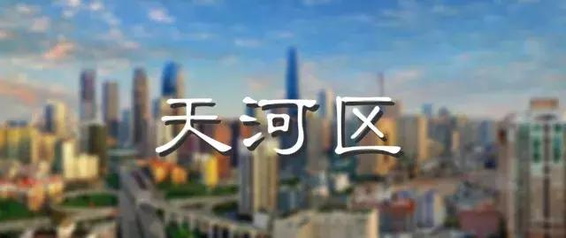
天河公园
一个负离子爆表的公园！内有乔木、灌木、花草、棕榈、竹子等100余种植物，并有20多株百年以上老树和园内特有的万余平方米的水中森林，以自然生态景观为主要特色。
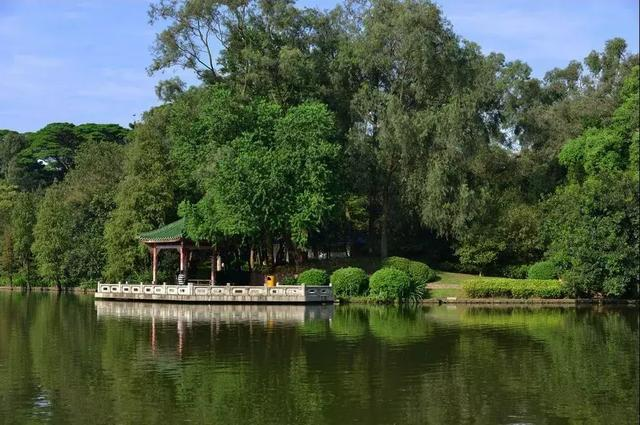
门票：免费
开放时间：06:30-22:00
地址：天河区黄埔大道员村23号
交通：地铁5号线员村站C出口；或乘公交194路、239路、293路、B11路、B8路在天河公园站下车
花城广场
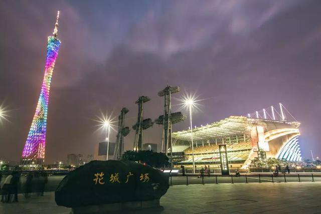
花城广场被誉为广州“城市客厅”，是广州市最大的广场。夜幕降临，绚丽多彩的灯光亮起，美不胜收！周六周日还有音乐喷泉观赏！
门票：免费
开放时间：全天
地址：天河区城市新中轴线珠江新城核心节点
交通：地铁3号线和地铁5号线在珠江新城站
广东省博物馆
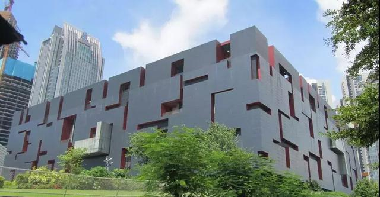
2010年建成，总占地面积6.7万平方米，是广东省唯一的省级综合博物馆，也是国家一级博物馆。
门票：提前到官网预约，免费领票参观
开放时间：周二至周日09:00-16:00，周一闭馆
地址：天河区珠江东路2号
交通：市内乘坐886、886A、293路公交车在冼村路南站下；或地铁3号线珠江新城站B1出口，步行200米左右
红专厂创意园
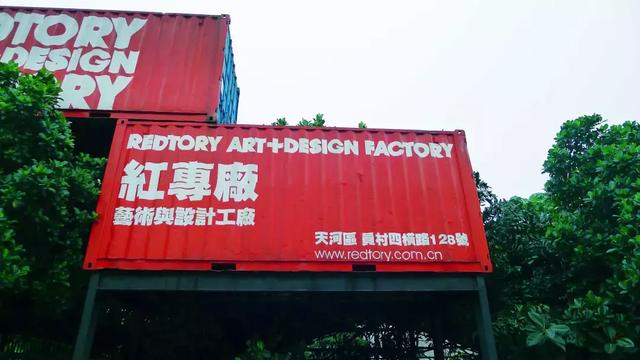
这是一座废弃的食品工厂，随意斑驳的红墙，不修边幅的天线，佛性生长的藤蔓，锈迹斑斑的旧机器，处处充斥着浓郁的上世纪工业怀旧气氛。
门票：免费
开放时间：10:00-21:00
地址：天河区员村四横路128红专厂
交通：地铁5号线员村站B出口出，到马路对面的公车站坐284、299到员村绢麻厂总站下，可看见一个通往临江大道的道口，从道口往琶洲大桥方向走约500米即到红专厂大门（南门）
黄埔古港
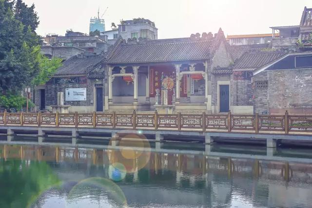
广州重要的历史文化遗产，见证了广州“海上丝绸之路”的繁荣，保留了大量海事遗迹和文物。最重要的是，这里超级多好吃的！
姜撞奶、艇仔粥、炖奶皇、番薯饼、牛初乳、盘粉、水果雪糕、青团、猪脚姜、摊豆腐、牛杂、钵仔糕.....没有十个胃真的不敢来！
门票：免费
开放时间：全天
地址：海珠区黄埔涌石基河边
交通：公交229路、262路、旅游3线到琶洲石基村总站(黄埔古港) 下
唯品同创汇
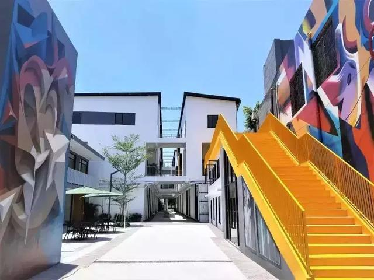
这里随处可见糖果色，每个角落都有涂鸦，每一个都不一样，相当有个性！
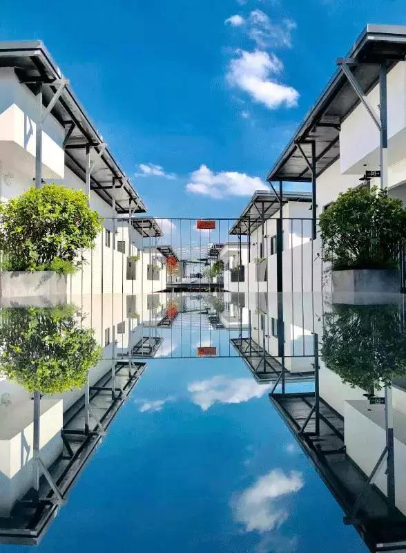
这是唯品会和同创汇联合打造的创意园区，每一面墙和建筑都满满的ins风~
门票：免费
地址：海珠区新滘中路88号
交通：地铁3号线大塘站B出口，步行300米
TIT创意园
在园区内见得最多的是这种楼梯，和红砖厂房，随便找个小姐姐坐一下，再配上广州的好天气，都能拍出一张时尚大片。
门票：免费
开放时间：全天
地址：广州市海珠区新港中路397号
交通：地铁３号线客村站Ｄ口出，步行400米即可
陈李济中药博物馆
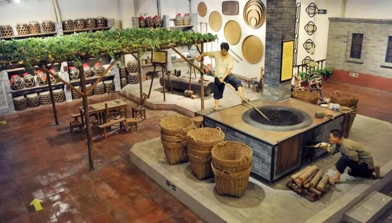
陈李济中药博物馆是广州地区首家中药行业博物馆。该馆除了主馆展示古时制药过程外，还有副馆和厂区药物种植参观地。
门票：免费，提前预约
开放时间：每月18日为开放日
地址：海珠区广州大道南1688号
太古仓
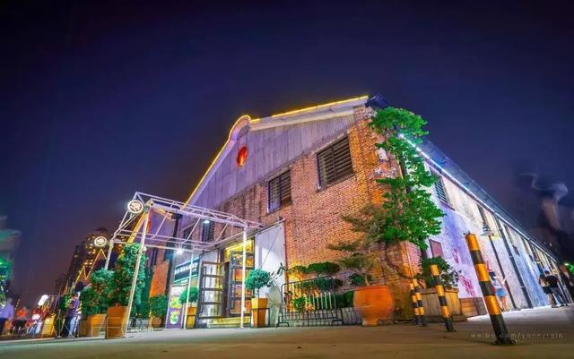
太古仓是以昔日的太古洋行码头为基础打造的创意产业园区，傍晚看看日落，吹吹江风，就连呼吸都变得清新了呢~
几步间隔就能见到精致的吊篮花灯，一瞬间以为自己置身异国，在这里漫步，情侣约会、闺蜜谈笑，锦上添花~
门票：免费
开放时间：全天
地址：广州市海珠区革新路124号太古仓
交通：地铁８号线凤凰新村站Ａ口出，步行1.1公里即可。
大元帅府

大元帅府旧址是以全国重点文物保护单位大元帅府旧址为依托建立的遗址性纪念馆。
门票：免费
开放时间：9：00-17：00 ，逢周一闭馆
地址：海珠区纺织路东沙街18号
交通：搭乘公交至大元帅府站或江湾桥南站；或渡轮至大元帅府码头、纺织码头
十香园
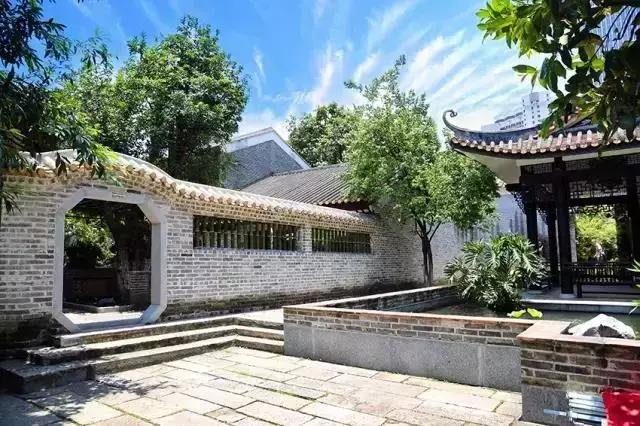
十香园为清末著名画家居廉、居巢兄弟的居住、作画及授徒之所。园内种有写生用的素馨、茉莉等10种香花，故名十香园。
设计精巧，亭榭楼阁，幽径相通，厅堂轩馆，占水栽花，有数不尽的名花佳果，堪称岭南园林珍品。
门票：免费
开放时间：09:00-16:30 (周一闭馆)
地址：广州市海珠区江南大道中怀德大街3号
交通：地铁2号线江南西站；或公交13路、25路、44路、 53路等至华海大厦站下，往西沿着玫瑰二街步行约50米，往南朝着隔山幼儿园方面步行约5分钟。
广州地铁博物馆
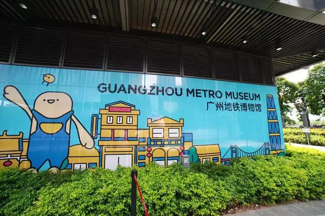
经常搭地铁的你有没有想过，地铁列车是怎样搬到地下的？最后一班车过后是怎样的景象？这些答案你都能在广州地铁博物馆找到！
广州地铁博物馆内有各种地铁展品，环形三维动画、1:1比例盾构机、溶洞仿真场景、3D彩绘列车、模拟驾驶，配上先进的VR技术，既可以玩，还可以增长知识！
门票：免费不免票，关注“广州地铁博物馆”官方微信号预约。
开放时间：周二至周五10:00-16:00，周末 9:00-17:00（每周一闭馆）
地址：海珠区万胜广场C塔裙楼负一至二层
交通：地铁4号线或8号线至万胜围站A出口，向南步行180米即可到达广州地铁博物馆
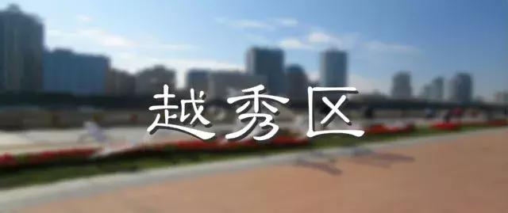
石室圣心大教堂
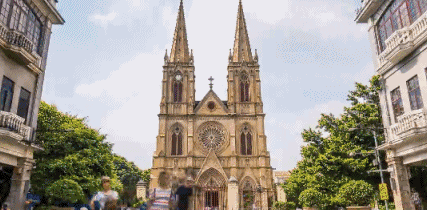
国内现存最宏伟的双尖塔哥特式建筑之一，也是全球四座全石结构哥特式建筑之一（另外三座是巴黎圣母院、威斯敏斯特教堂、科隆大教堂）。
门票：免费
开放时间：8:30-11:30，2:30-17:30
地址：越秀区一德路旧部前56-7号
交通：地铁2号线至海珠广场站B2出口，或者地铁6号线一德路站B出口，步行10分钟可到。
二沙岛

珠江上天然形成的一片绿洲，四面环水，绿树成荫，是城中名副其实的“绿岛”。
门票：免费
开放时间：全天
地址：越秀区珠江河段上
地铁：乘坐5号线至五羊邨站
公交：乘坐89路、194路、b21路到达星海音乐厅(省中医二沙分院)，步行约80米，到达二沙岛
麓湖公园
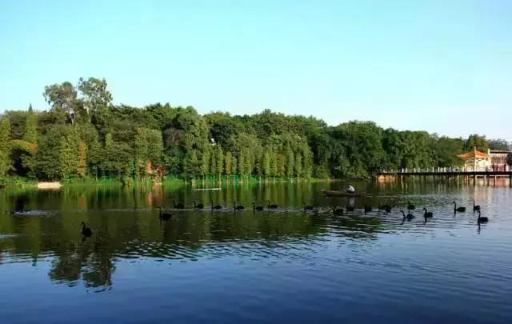
大型山水园林公园，园内山清水秀，鸟语花香，登高可眺望市区全景，这里还有近40万平方米的聚芳园和簪香展馆。
门票：免费
开放时间：8:00-18:00
地址：越秀区广园中路麓景路11号
交通：乘坐63路、245路、旅游公交1线、夜52路公交车在麓湖公园（艺博院）站下
东山湖公园
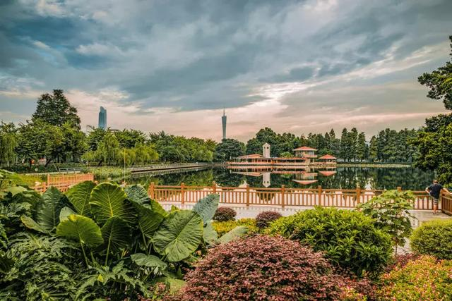
被称为羊城八景之一的“东湖春晓”，园内山水相依，还有九曲桥、五孔桥，拱桥相连湖中岛屿，又与极具特色的亭台楼阁相互映衬。
门票：免费
开放时间：6:30-21:30
地址：越秀区东湖北路123号
交通：乘坐地铁6号线至“东湖”站下；公交乘坐44路、287路、542路、548路、811路、813路至“东湖路”站下
越秀公园
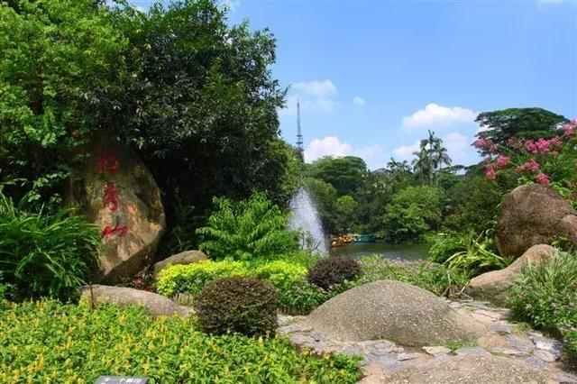
越秀公园是广州最大的综合性公园，1个越秀公园=1.7个荔湾湖公园=5个人民公园！2006年还被评为国家4A级旅游景区。
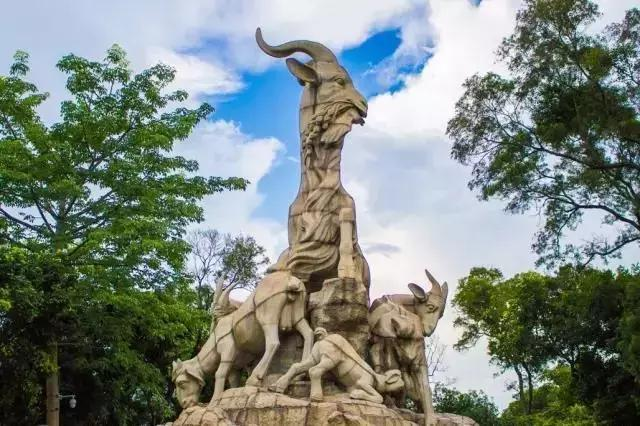
五羊雕像更是广州的城市地标之一，五羊石和五羊传说，家喻户晓。
门票：免费
开放时间：06:00-22:00
地址：越秀区解放北路988号
交通：地铁二号线越秀公园站下车即可；公交109、110、b10、b2、278、301等可到公园北门站
流花湖公园
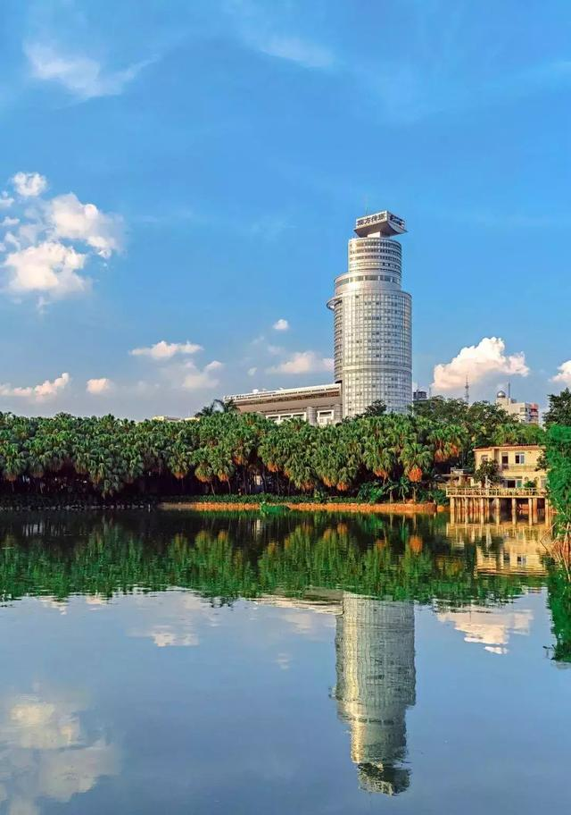
公园以棕榈植物、榕属植物、开花灌木及开阔的草坪、湖面与轻巧通透的岭南建（构）筑物相互配合，形成具有强烈南亚热带特色的自然风光。
门票：免费
开放时间：7:00-22:00
地址：越秀区东风西路
交通：越秀公园地铁站B1出口
广州艺术博物馆
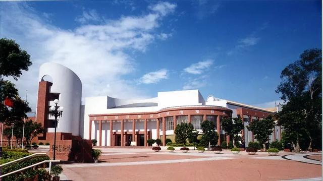
想不到白云山脚麓湖岸边，竟隐藏着一间艺术博物馆。庭院山水，岭南风格的建筑与园林融为一体，随手一拍都是大片，而且还免费。
门票：免费
开放时间：周二至周日9:00-17:30（17:00停止入院）
交通：5号线小北站C出口
地址：越秀区麓湖路13号文化科普园内
广东美术馆
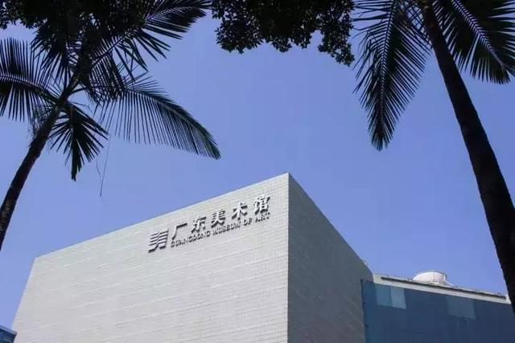
广州重要艺术地标之一，“文艺一日游”的必经之地。
门票：免费（入馆需携带身份证过安检）
开放时间：09:00-17:00（逢周一闭馆；16:30后停止入馆）
地址：二沙岛烟雨路38号
交通：公交89路、194路、B21路、131A路至星海音乐厅站
南越王宫博物馆
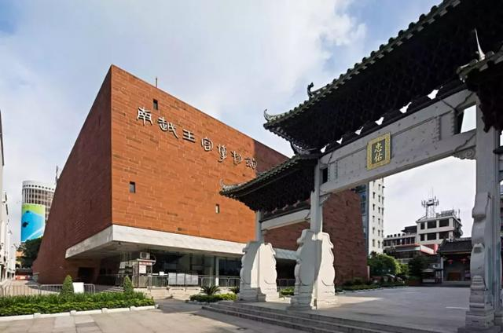
南越王宫博物馆内保留有从秦代到民国的十三朝遗迹，如一部反映广州城市建设的实物史书，被誉为“广州历史文化名城的精华所在”。
这里有两千年前的南越国御花园，保留有石池、曲渠、平桥、步石、回廊等遗迹，体现了先进的园林设计理念和造园要素，是目前国内保留最完好、时代最早的御苑遗迹。
门票：免费不免票，在入口处取门票
开放时间：9:00-17:30（逢周一闭馆，国家法定节假日除外）
地址：越秀区中山四路316号
交通：地铁1号线或2号线至公园前站E出口
五仙观
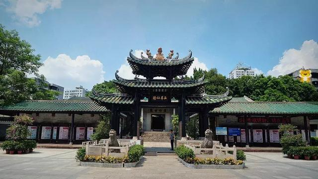
广州是“羊城”，起始于五仙观；广州是“穗城”，也是起始于五仙观。
五仙观是一座祭祀五仙的谷神庙，馆内现存仙人拇迹、岭南第一楼、后殿及五仙塑像等文物古迹。又长期举办有盆景展、广州古城历史地图展、越秀古迹黑白摄影展、民间工艺展等展览。
门票：免费
开放时间：9：00-17：00
地址：越秀区惠福西路233号
鲁迅纪念馆
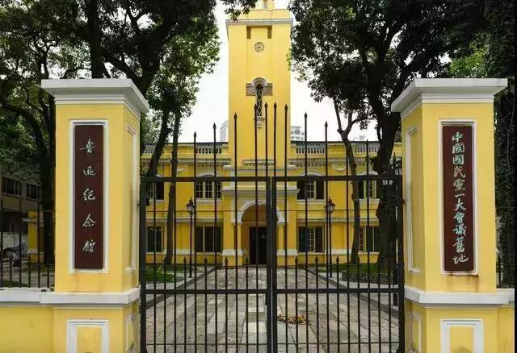
广州鲁迅纪念馆是纪念鲁迅、学习鲁迅的基地。这里有国民党“一大”的旧址，是第一次国共合作的见证。
门票：免费，凭身份证领取门票
开放时间：周二至周日9:00-17:00，逢周一闭馆
地址：越秀区文明路
广东革命历史博物馆
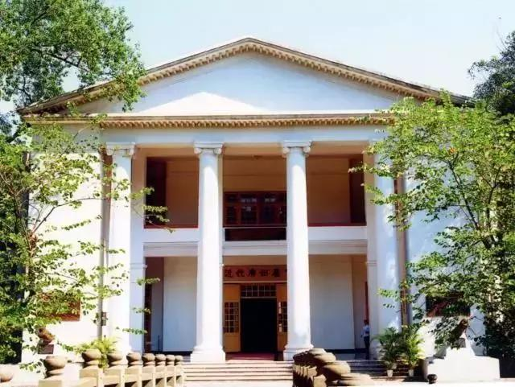
广东革命历史博物馆（又称广州近代史博物馆）是中国地方专门性博物馆，也是大革命时期一个重要的革命旧址。
它原是清末广东咨议局。辛亥革命后，广东人民在这里召开大会，宣布反清独立。 1921年5月5日，孙中山就任非常大总统，在这里举行宣誓就职典礼。1925年9月底，成为中国国民党中央党部所在地。
门票：免费
开放时间：周二至周日9:00-17:30，逢周一闭馆
地址：越秀区中山三路广州起义烈士陵园内
交通：地铁1号线烈士陵园D出口，步行359米，约六分钟到达广东革命历史博物馆
珠江夜景（人民桥）
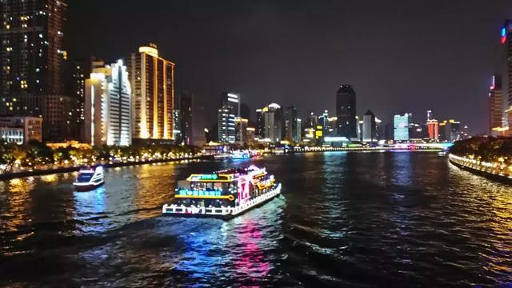
对广州人来说，最引以为豪的羊城美景之一就是广州塔+珠江夜游。夜晚的珠江两岸，流光溢彩，灯火辉煌，高楼林立，游人如织，有着比肩纽约曼哈顿的国际范灯火，也有属于岭南传统江景的静谧之美。
门票：免费
地址：越秀区沿江西路
交通：乘坐地铁6号线至文化公园下
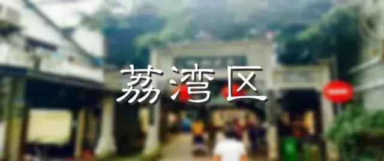
荔湾湖公园
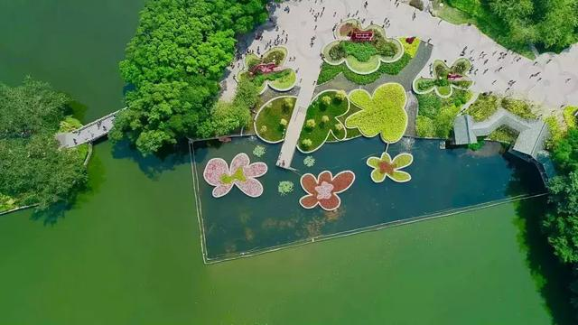
公园建于1958年，由小翠湖、玉翠湖、如意湖、五秀湖四个湖组成，是最能体现南国优雅柔美风情，以湖为主的公园。八亭、八桥、四廊、四湖、三厅、一轩、一阁，使得荔湾湖公园成为广州城区历史悠久的水乡名胜。
门票：免费
开放时间：6:00-22:30
地址：荔湾区龙津西路155号
交通：乘地铁5号线至中山八站下；或者乘坐公交可至泮塘总站、中山八路站、到石路基站、泮塘站
沙面
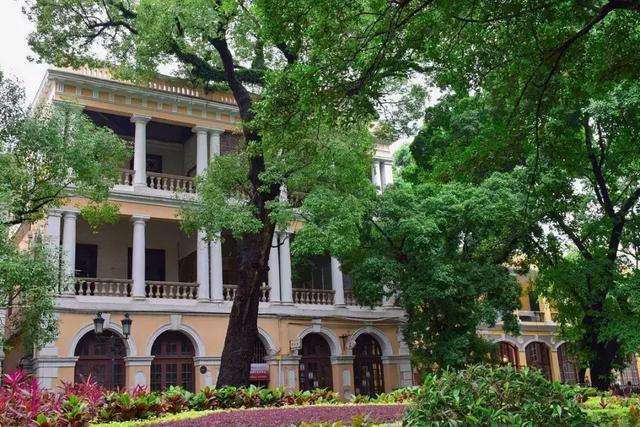
沙面，因其坐拥各式欧陆风情的建筑群，而又隐匿于广州这个大都市之中，营造出一种慢时光的氛围，成为了不少小资一族们乌托邦休闲聚集地、拍客追捧的取景地。
门票：免费
开放时间：全天
地址：荔湾区珠江岔口白鹅潭畔
交通：地铁1号线在黄沙站F口出，南行过桥便到沙面；或地铁6号线文化公园站A出口下
信义会馆
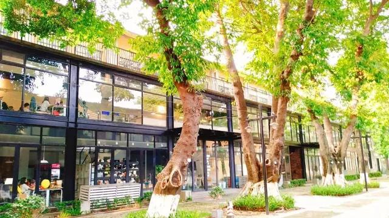
这里原是广东水利水电厂的厂房，广州唯一一个德国教堂亦曾坐落在此。园区不大，但时代碰撞的艺术气息浓郁。
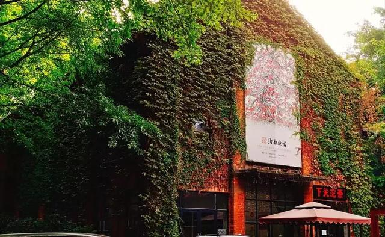
建筑的外墙几被刷上了锗红色，在午后阳光的打照下显得格外精神。红色的建筑，绿色的蔓藤植物，满满的复古文艺风，适合拍照。
门票：免费
开放时间：全天
地址：荔湾区芳村大道下市直街1号
交通：乘坐公交车到芳村站或乘坐地铁1号线到芳村B2出口，往前走500米
粤剧艺术博物馆
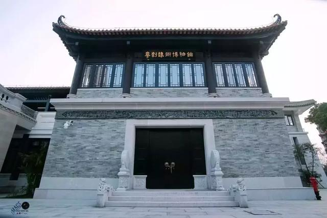
想了解广州传统文化，粤剧博物馆是个不二之选。这里是岭南文化、西关文化传承聚集地。青石路面上的三雕两塑，小桥流水，亭台楼阁随处可见~安静到不觉得自己在市中心。
门 票：免费，凭身份证或者预约参观
开放时间：周二至周日9∶00-17∶00
地址：荔湾区恩宁路127号
聚龙古村
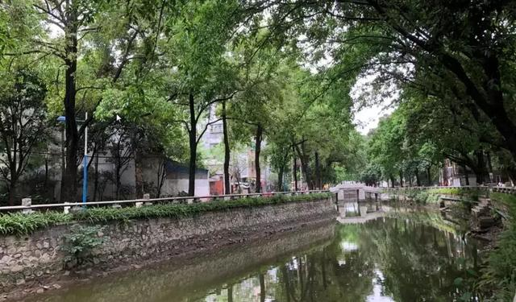
在广州有“北有陈家祠，南有聚龙村 ”之说，大家或许都对陈家祠非常熟悉，但估计你应该不知道在荔湾有个聚龙村。
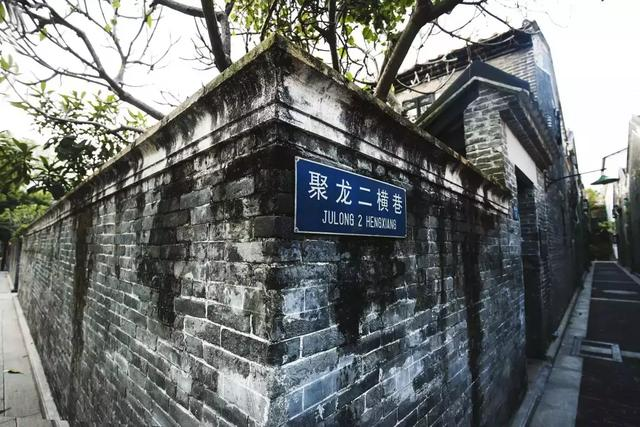
130多岁的聚龙古村，依然是清末的原状。这里还未被创意园开发者和艺术家们染指，古香古色的青砖冷瓦，不失昨日的光华。
门票：免费
开放时间：全天
地址：荔湾区聚兴大街20号附近
交通：地铁1号线花地湾站B出口，步行１公里即可
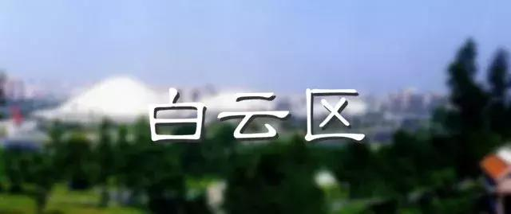
白云湖公园
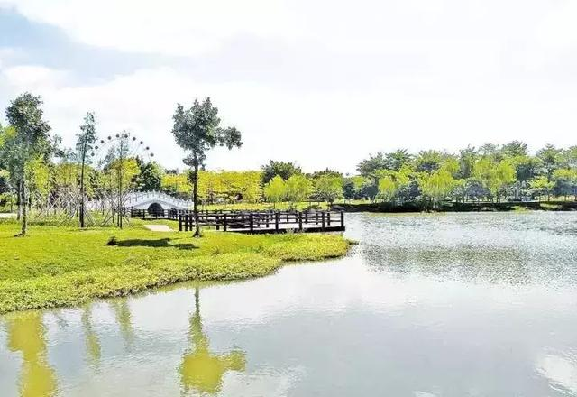
广州最大的人工湖，有多个岛屿，还有摩天轮！园区内两条健身绿道，骑车非常畅快！
秋味渐浓，候鸟出没频繁，又到了观赏好时节！
门票：免费，但公园内的游船与娱乐项目是收费的
开放时间：7:00-20:00
地址：白云区石井大道
交通：地铁5号线广州火车站D4出口出，步行至流花汽车站搭乘271A路公交车到石井大道下
广州雕塑公园
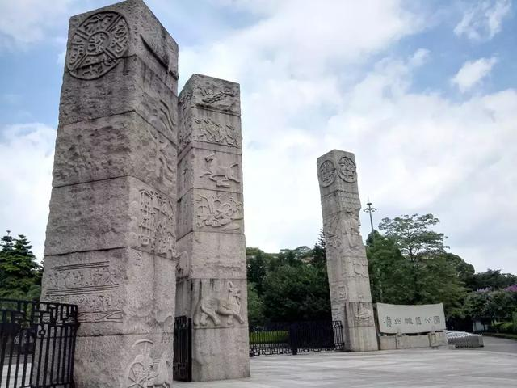
全国最大的主题式公园，用雕塑的形态表现广州内涵。羊城史雕塑区和“广州风情街”雕塑群，浓缩了广州2000多年的文化与辉煌。
门票：免费
开放时间：8:00-18:00
地址：白云区飞鹅岭下塘西路545号
交通：36、66、76、76A、529、544、546、561、810、864路公交车，下塘西路站下车
神农草堂中医药博物馆
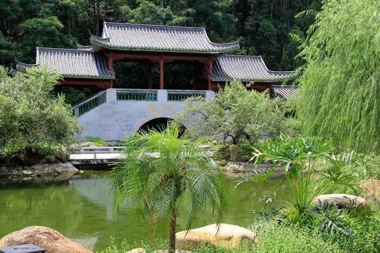
神农草堂，是全国首家融“天然”和“文化”于一体的半敞开式中医药博物馆，被誉为“中医药迪士尼”。
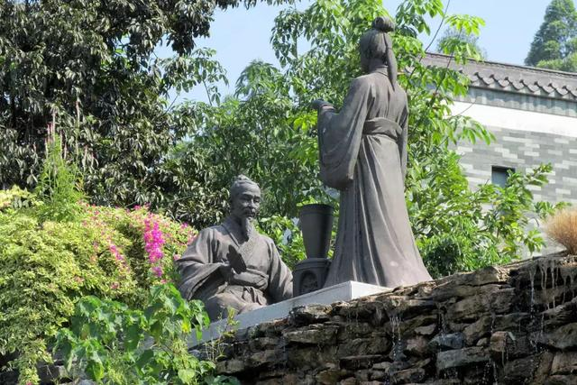
在这里，你可以看到武侠小说中的三大毒草断肠草、见血封喉、情花（白花曼陀罗）！
门票：免费（散客需持有效证件；团体参观需要预约）
开放时间：周二至周五：8:00-12:00，13:30-17:00；周六日和节假日：9:00-12:00，13:30-17:00（逢周一闭馆）
地址：广东省广州市白云区沙太北路389号
交通：公交246、808、884、501路至白云山中药厂站
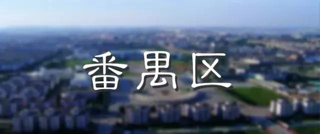
大夫山森林公园
这周围聚集山峰、山塘，还有多个别具匠心的人工湖，形成峰峦起伏、山水倒映的奇妙景观，还设有烧烤场、垂钓场、风筝场等多个休闲娱乐之地~环境和空气都非常好。
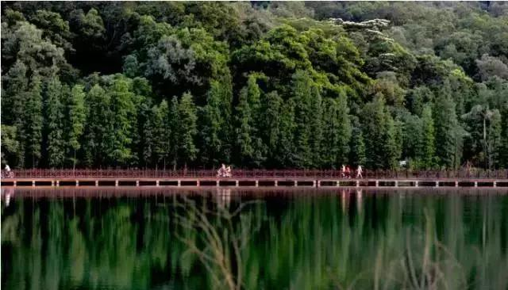
如果你不想气喘吁吁的翻越各种山峰,但是又想运动运动，呼吸一口新鲜的氧气,那么极力推荐你来番禺的大夫山哦！这是一座适合骑行的山~
门票：免费
开放时间：8:00-18:00
地址： 番禺区禺山西路688号
交通：地铁3号线、7号线到汉溪长隆站，转乘公交番109、番125、10A到大夫山公园北门站
沙湾古镇
广府文化的代表，距今已有800多年历史。这里弥漫着悠久历史的古韵情怀，那古香古色的民居建筑、繁复细腻的砖雕, 一砖一瓦皆故事。
门票：免费，但镇内有的展馆需要收费，展馆联票40元
开放时间：全天，展馆9:30-17:30
地址：番禺区沙湾镇北村
交通：地铁3号线市桥站B口出，坐番67路在沙湾文化中心站下车，步行80米即可
海鸥岛
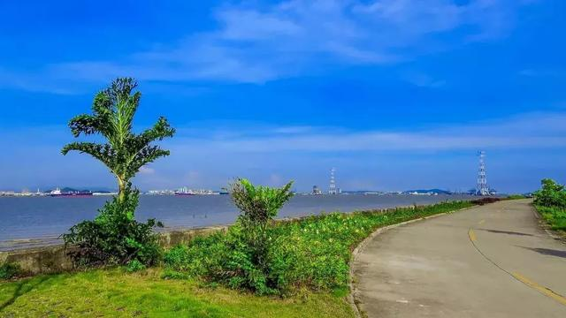
海鸥岛，这个地名已然让人心生向往。目前广州城市范围内保持着原生态的唯一大型岛屿，岛上遍布农庄，可以到这里吃海鲜、摘水果~
门票：免费
开放时间：全天
地址：番禺区东郊，在番禺区石楼镇范围内
交通：地铁3号线至市桥站C出口走300米，到市桥汽车站，乘坐番禺海鸥岛专线番148。
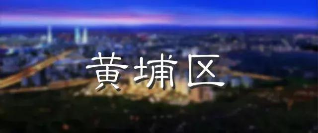
黄埔军校旧址纪念馆
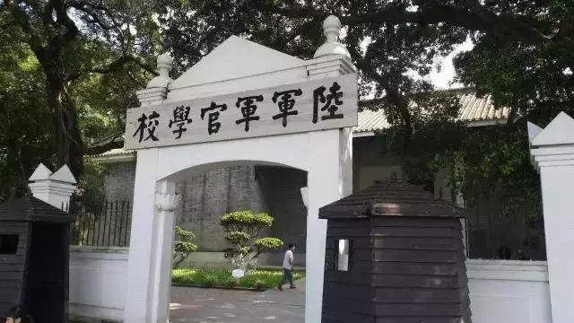
革命时期孙中山在中国共产党和苏联的帮助下建立的一所新型军事学校，在中国近代史和军事史上具有重要意义。
门票：免费
开放时间：周二至周日9:00-17:00，逢周一闭馆
地址：黄埔区长洲军校路170号
交通：地铁4号线在大学城北（B出口）下车，转换383公共汽车，在军校路口下车，步行到黄埔军校。或鱼珠码头、新洲码头搭乘轮渡至长洲岛
广州辛亥革命纪念馆
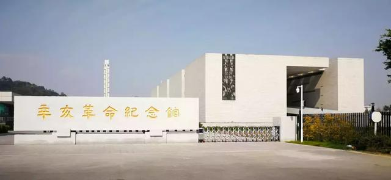
馆内的主题设计分为六个展厅，展厅之间就像迷宫格，从进去到出来不用走回头路，每个展厅连接起来就像一条历史时光穿梭机，重演历史的兴衰盛况，每一幕人物事件都栩栩如生让人身临其境。
门票：免费
开放时间：周二至周日9:00-17:00，逢周一闭馆
地址：广州市黄埔区长洲岛金州北路
香雪公园
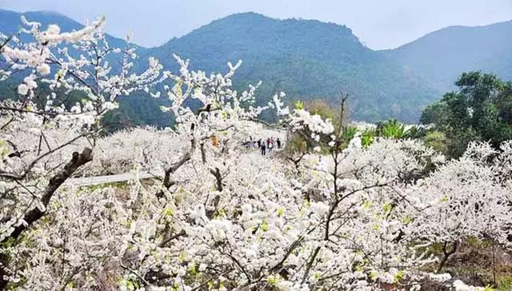
这里是广州最具书香气息公园，每逢农历岁末，冬至前后，梅花盛开，繁花如雪，“萝岗香雪”胜景由此而来~
每一次与梅花相约都是惊艳的邂逅。不知不觉，我们身边的梅花也悄悄开啦~2018年第11届香雪节将于12月28日开幕，恰好撞上元旦假期，咱们组团去赏“雪”吧！
门票：免费
开放时间：全天
地址：黄埔区萝岗街道塘山路
交通：地铁6号线香雪站F口出，坐327路公交在萝岗（香雪公园）站下车。
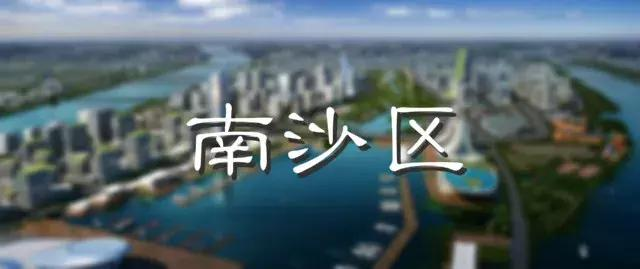
黄山鲁森林公园
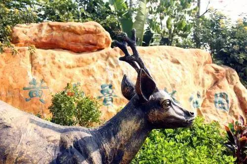
黄山鲁森林公园是广州地区最大的森林公园，森林覆盖率高达99.9%！不仅是天然氧吧，鸟类密度在广州各森林公园中也最高。
费用：免费
地址：南沙区光业路与石抖街交汇处以西300米
交通：乘坐4号线到蕉门站下，乘坐南61路到黄山鲁西门总站
南沙滨海公园
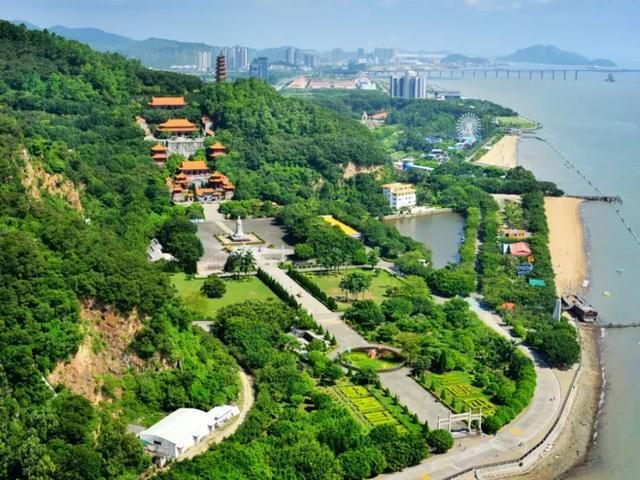
广州唯一能看海的公园，坐在摩天轮上，360度的海景就在你眼前。（然而现在摩天轮废弃了）
费用：免费
地址：南沙区万顷沙镇新港大道1号
开放时间：周一-周五：9:00-17:30，周末：9:00-18:00
交通：地铁4号线蕉门站A口出，坐南54路于天后宫东门站下车，步行640米即可

曼古园
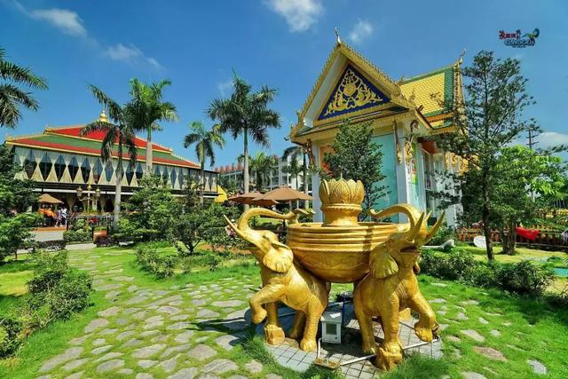
以金色为主题，瑞象金壁、各式佛塑、水榭曲廊，带有热带风情的植物点缀其中，满满的泰国风情~萨瓦迪卡

夜晚的曼古园流光溢彩，十分美丽。
门票：免费（银博物馆25元，石头记矿物园48元）
开放时间：09:00-17:30
地址：花都区平步大道西大观园路5号（花都珠宝小镇内）
交通：地铁9号线到花都广场，换乘公交花75路（花都广场东 ）至花都珠宝小镇总站即可。
红山村
广州市最美的山村，村内有红湖春色、花溪漫步、长廊放歌、深谷寻幽、浅谷探险、竹林听风、水轮悠悠、石上清泉等景点。
红山村在每年的3月举行一年一度的民俗文化节庆活动—油菜花节，届时，近百亩金灿灿的油菜花迎风摇曳，吸引八方游客。
门票：免费
开放时间：全天
地址：花都区王子山森林公园脚下
交通：花都客运站或广州北站乘“新华站-梯面站”专线车，到达梯面镇转乘当地交通工具前往红山村。
或地铁3号线人和地铁站B出口，转乘704路公交车到两龙市场站，再换乘花17路公交车到王子山森林公园总站。
塱头古村
塱头古村建于元朝，距今已有642年的历史，这是一个活着的古村，很多民宅住着人，能感受到真真正正的旧风土。
这个快上千年的古村很是低调，没有大量的游客，但保护规划得很好。特色美食是芋头焖五花肉，你们来塱头古村玩，来了一定要尝尝~
门票：免费
开放时间：8:30-17:30
地址：花都区炭步塱头村
交通：广州市区→广清高速→新华出口
太子坑森林公园
相传太子坑山上原来供奉着哪吒的寺庙，哪吒也叫“三太子”，故称“太子坑”。提起太子坑，首先想到的是一幅幅充满欧式风情景象，有多少人的婚纱照是在这里拍的~
门票：免费
地址：增江街道联益村里
大封门森林公园
大封门森林公园，北回归线穿越其中，身临其中，可以“远眺白水仙瀑之雄，近揽南昆山脉之秀”。在这里，可以一次性赏尽奇峰秀水、峡谷激流、森林湖泊、冰臼奇石、瀑布奇潭、天梯云雾、温泉卧佛。
门票：免费
地址：增城区派潭镇高滩白水大道128号
畲族风情村
这是广州地区唯一的少数民族聚居地，也是广州最大的畲民聚居村落，满满的少数民族的风情。
门票：免费
开放时间：全天
地址：荔城东北19公里
自驾车：荔城→增正路→蔚村路口转右→正吓线→兰溪→畲族村，约一个小时路程。
公交车：增城有旅游公汽到达（挂绿广场有点）。每天发往畲族风情游览时间：6：00，15：50，返回时间7：00，17：00
瓜岭古村
瓜岭村距今已有500多年的历史，这里有广州惟一的水上清代建筑民居群。弯弯的河道、古朴的小桥、幽静的庭院、婆娑的榕树、宁静的碉楼，具有岭南特色的建筑物错落有致。
门票：免费
地址：增城区瓜岭村
交通：地铁13号线新沙站A出口，转新塘3路公交，到瓜岭村下
阿婆六村

阿婆六村海拔730米，比白云山海拔还要高，是广州海拔最高的自然村。白天的阿婆六村古朴自然，入夜后则繁星璀璨，分外迷人。
透明度高，光污染少，所以这里成为了广州最佳观星之处。漫天繁星笼罩下来，美得都一点不真实，为了这片星空，怎么也要去一遍这世外桃源~
门票：免费（搭帐篷30元、住农家旅店100-150元）
开放时间：全天
地址：从化区良口镇阿婆六村
交通：顺风车最方便
PS：要看星星一定要看好时间，在农历月头或月尾前往
溪头村
溪头村被称为广东最美乡村，景色媲美浙江桐庐，拥有原生态的古朴、茂密清凉的竹海、壮观的瀑布和潺潺的溪流，到村里一定要去玩水！
门票：免费
开放时间：全天
地址：从化区良口镇溪头村
交通：在从化市汽车客运站有公共汽车直达